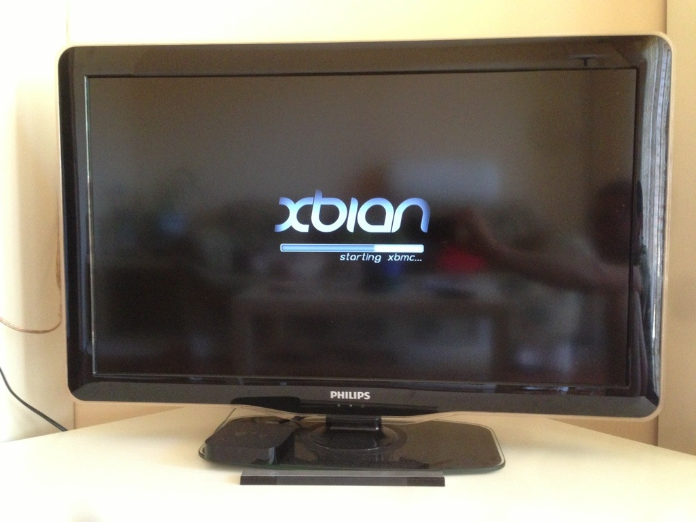
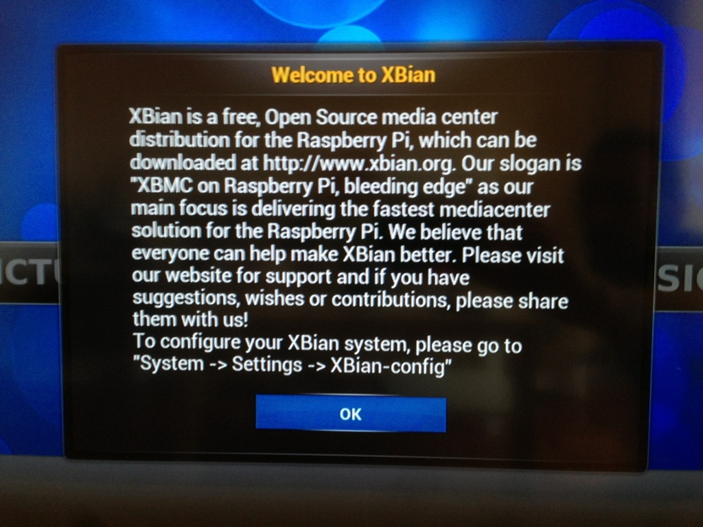
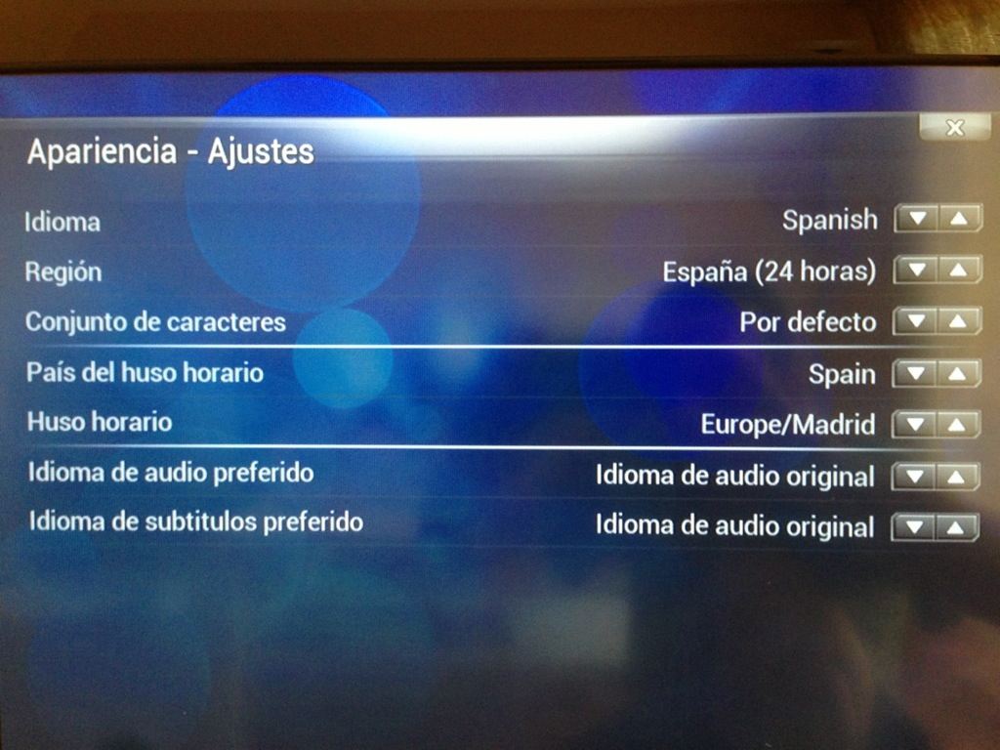

Instalación de Xbian
La instalación es muy fácil ya que solo hay que cargar la imagen en la tarjeta SD y al conectarla a la Raspberry Pi se instalará y se iniciará el entorno gráfico de XBMC (Kodi) sin tener que configurar nada antes.
Al disponer de instalador oficial nos descargamos el instalador se extrae el zip y se abre el programa.
Una vez abierto el programa se inserta la tarjeta SD y si no hay ningún periférico puesto en Windows el programa detecta automáticamente la tarjeta SD, y puesto que
es un instalador oficial no hay que poner la imagen ya la descarga el programa, así que se elige la versión para la Raspberry Pi y se le da a Install.

Nos preguntará si deseamos descargar la imagen le damos a Yes.

Una vez que ha descargado la imagen preguntará si estamos seguros le damos a Yes y comenzará a instalarse.

Una vez haya acabado se saca del equipo y se inserta en la Raspberry Pi, recordar poner la alimentación lo último y comenzará a cargarse el sistema el solo. 
Al acabarse de bajar saldrá un mensaje de bienvenida y indicando que para configurarlo hay que ir a Settings.  Estará en inglés de modo que hay que cambiar primero el idioma, después ya a nuestro gusto. 
Nota: el usuario por defecto es: xbian y su contraseña: raspberry.